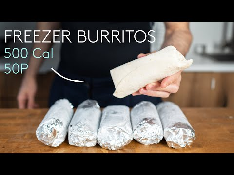

Description
This recipe is made by Felu and you can check out hischannel.This 500 calorie burrito has beef, oninions, tomato sauce and cheese, making it a simple yet effective freezer meal-prep breakfast.
Ingredients
- Tortilla
- Ground Beef
- Onions
- Tomato Sauce
- Cheese
Steps
- Chop the onions
- Cook the ground beef unill brown then add onions
- Add tomato sauce
- Add Cheese
- Put beef mix onto tortilla and wrap it
- Serve and enjoy!
Go Back